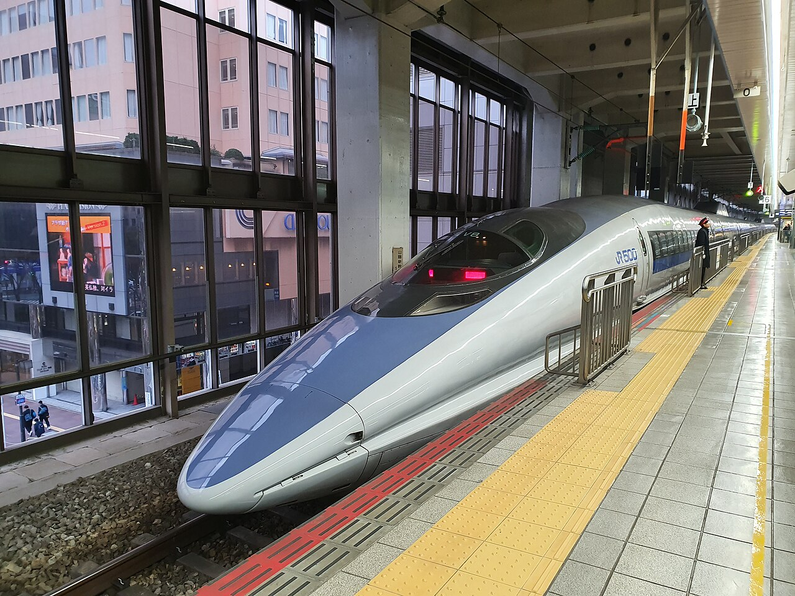
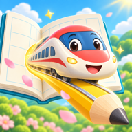

きょうは、どの でんしゃに あえる？かいて、あつめる。
かいて、あつめる。
じぶんの鉄道図鑑。
5もじ かいたら、でんしゃカードを 1まい。
いそがなくて だいじょうぶ。

もじ鉄図鑑MOJITETSU COLLECTION
5もじ かいたら、でんしゃカードを 1まい。
5もじ、さいごまで できたね。
案内なしの選択と、補助後の練習を分けて見られます。紙での定着を判定するものではありません。
選んだコースの中で、次の5問から反映されます。進行中の出題は変わりません。
このブラウザ内に保存します。サイトデータを消すと失われます。別のアドレスへ移るときも書き出して移せます。
集めた電車カードだけを0枚に戻します。書き順の記録・重点文字・出題設定は残ります。
対応文字は、ひらがな7字と漢字17字（一〜十・山・川・木・目・月・上・下）。カードは20種類。記録は直近100回分です。中断は筆順間違いに数えません。操作の誤判定はあり得るため、記録を手がかりに実際の様子を確かめてください。